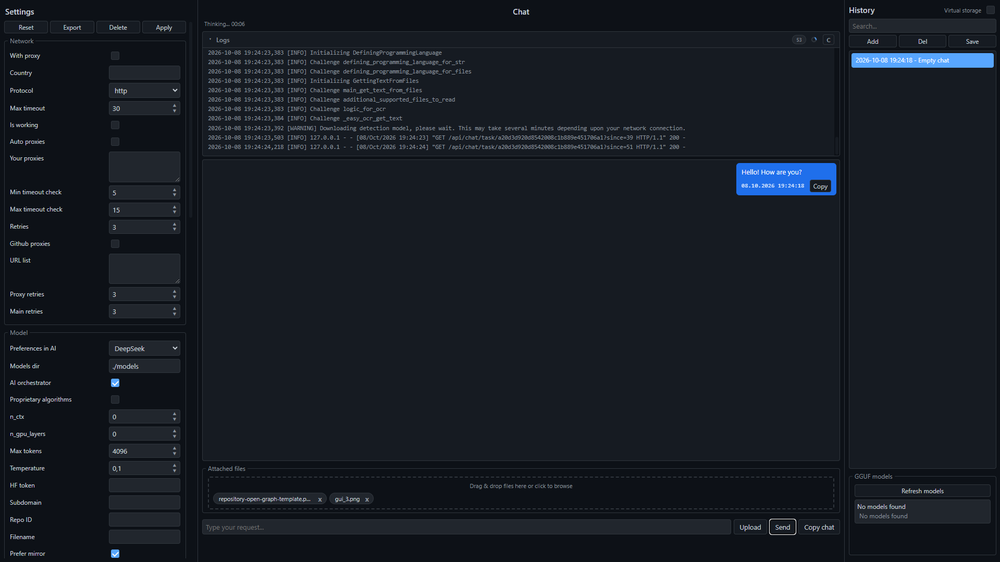

Code at the speed of thought
BiNeuron is a fully local AI assistant for code, with optional cloud fallback. Reads your project files, detects the programming language, picks the right model, and generates code, docs, or analysis. Everything stays on your machine by default.

Why BiNeuron
A local first AI assistant built for developers who care about privacy, speed, and control, with cloud options when you want them.
100% Local by Default
Runs GGUF models on your machine. No API keys, no subscriptions, no data leaving your computer unless you enable cloud mode.
Multi Language Detection
Detects over 25 programming languages and automatically picks a specialised model for each one.
Automatic File Editing
A two stage pipeline where the main AI writes code and a light JSON formatter applies whole file changes on disk.
OCR and Documents
Extracts text from PDF, DOCX, ODF, PPTX, XLSX, EPUB, MOBI, FB2 and images via EasyOCR or DeepSeek OCR.
Virtual Storage Mode
Point BiNeuron at a folder and it recursively reads every supported file into the analysis context.
Cloud AI Fallback
Optional cloud inference through LiteLLM: switch to any provider by setting a cloud model name and API key.
Request Preview
Inspect the full system prompt, translated request, file context, and attached file list before sending anything to the AI.
Chat Encryption
Protect your conversation history with a master password using Fernet and PBKDF2 with 200,000 iterations.
Privacy Controls
Request anonymization with Microsoft Presidio and an optional profanity filter before anything reaches the model.
Proxy and Mirror Support
Automatic fallback to hf-mirror.com, GitHub proxy lists, and custom proxy settings for restricted networks.
Offline Translation
Google Translate, DeepL, or fully offline ArgosTranslate. Your request is normalised to any target language.
24 Dark Themes
From Midnight Deep and Dracula Castle to Synthwave 84, Matrix Terminal, and AMOLED Black.
Download BiNeuron
Completely free and open source. No accounts, no sign ups, no hidden fees. Pick your platform and start coding with a local AI in under five minutes.
Every release is built automatically from source and signed. Choose the format that fits your workflow: a one click installer for Windows, a native package for macOS, or a portable AppImage for Linux.
If a file does not download or you get an error, open the official releases page on GitHub and pick the right build for your platform manually.
Open releases on GitHub